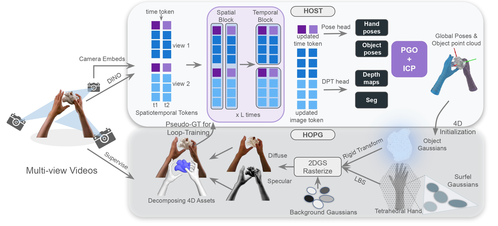

The growing demand for high-fidelity 4D hand-object interaction (HOI) data in embodied AI and spatial computing is currently bottlenecked by the reliance on pre-scanned object templates and physical markers. While recent methods have demonstrated promising results in reconstructing 4D hand-object interaction from videos, they are highly sensitive to initial estimates of hand and object poses. Yet, estimating these poses from images is challenging, in particular under severe occlusion which is inherent in hand-object interaction scenarios.
We propose a novel system for the robust and accurate reconstruction of hands and objects from multi-view videos without requiring any templates or markers. Our system consists of two main components with key innovations: (1) HOST, a multi-view feed-forward transformer model that aggregates cross-view geometry and temporal cues to provide a reliable initialization; and (2) HOPG, a hand-object physics-aware Gaussian-based optimization framework integrating tetrahedral constraints and collision refinement to produce physically plausible and visually accurate reconstruction.

Our pipeline operates in two stages. First, the Hand Object Spatiotemporal Transformer (HOST) processes multi-view videos to robustly regress parametric hand/object poses, dense object point clouds, and segmentation masks, yielding a metric 3D initialization. Second, the Hand Object Physics-aware Gaussian (HOPG) module leverages this initialization to optimize a hybrid 2D Gaussian representation. By enforcing structural constraints and explicitly decoupling diffuse and specular appearance, HOPG effectively prevents illumination bake-in.
HOPG achieves photorealistic rendering by decomposing appearance into diffuse and specular components. This explicit lighting decoupling prevents artifacts from baking into the geometry, yielding clean normal maps and high-fidelity 3D assets.
Detailed 3D meshes of complex, real-world objects extracted via TSDF fusion from our refined 2D Gaussian representation. Even without templates, our method recovers intricate geometric details and preserves structural integrity under complex occlusions.
If you find our work useful, please cite our paper:
@inproceedings{todo
}